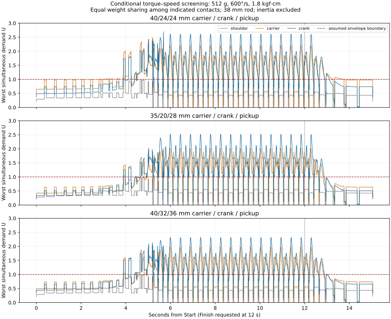

October 5, 2026 · Offline engineering comparison · No firmware, robot settings, calibration or CAD changes.
Including torque and speed together changes the preferred linkage. Under the nominal comparison assumptions, 35/28/36 mm is the best tested carrier/crank/pickup combination. Keeping the 40 mm carrier and using a 32 mm crank with 36 mm pickup scores within 0.93% of that result.
The previously suggested 35/20/28 configuration improves static leverage, but its extra crank speed is a cost once motor performance is included. The larger pickup paired with a longer crank gives a better combined result in this sweep. These dimensions describe calculated candidates, not print-qualified parts.
For every sampled instant and every one of the twelve servos, calculate contact torque and angular speed together. The symmetric screening objective is
U = max over time, legs, motors and tested force directions:
|required contact torque| / assumed stall torque
+ |required angular speed| / assumed zero-load speed
Remaining normalized margin = 1 − U. Minimize U.
U=1 is the boundary of this assumed linear envelope; below 1 leaves margin. U=2.3 is a combined demand score, not a statement that torque alone is 230% of capacity. The nominal comparison uses 600°/s and 1.8 kgf·cm (0.1765 Nm), referencing TowerPro MG90S ratings at 4.8 V. The installed servos are identified in repository notes as Miuzei: this is a comparison curve, not their measured specification. The linear DC motor approximation follows maxon’s characteristic-line explanation; the complete hobby servo includes gearing and a controller that this approximation does not characterize.
38 mm rods, 55 mm distal lengths, fixed pivot locations, 512 g reported mass. Original Run200 targets and timing retained; the offline command limit is 20,000°/s so the software limiter does not hide geometric demand.
| Carrier/crank/pickup mm | Worst U | Reduction vs baseline | Carrier U | Crank U | Peak carrier °/s | Peak crank °/s |
|---|---|---|---|---|---|---|
| 40/24/24 | 2.696 | 0.0% | 2.482 | 2.696 | 841 | 1188 |
| 35/20/28 | 2.520 | 6.5% | 2.019 | 2.520 | 1036 | 1277 |
| 36/24/28 | 2.487 | 7.8% | 2.259 | 2.487 | 975 | 1181 |
| 37.5/24/28 | 2.490 | 7.7% | 2.144 | 2.490 | 901 | 1181 |
| 35/28/36 | 2.299 | 14.7% | 1.974 | 2.299 | 1036 | 1097 |
| 40/32/36 | 2.320 | 14.0% | 2.022 | 2.320 | 841 | 1057 |
Peak speeds are over the full entry/run/Finish sequence. Each U uses simultaneous torque and speed; the separate peak-speed columns need not occur at the limiting U. Carrier and crank U columns are their respective worst values over all four legs and times.
Every tested option exceeds U=1 at the original unrestricted timing under the nominal comparison curve. Geometry improves the balance but does not establish that these installed servos can track full Run200. No speed cap or motion restriction was changed.

Hold assumed stall torque at 1.8 kgf·cm and vary the speed intercept; these are sensitivity cases, not claims that raising voltage produces these speeds.
| Assumed speed °/s | Best tested dimensions mm | Worst U | Limiting instant/motor |
|---|---|---|---|
| 600 | 35/28/36 | 2.299 | steady_run: front_left crank |
| 750 | 35/26/36 | 1.959 | steady_run: front_left crank |
| 900 | 35/24/36 | 1.723 | steady_run: front_right crank |
| 1200 | 35/20/36 | 1.413 | steady_run: front_right crank |
| 1500 | 35/20/36 | 1.261 | entry: rear_left crank |
Additional cases use 1.4 and 2.2 kgf·cm and a 1.5× contact-force multiplier. Complete rankings for both envelope models and both rods are included. With 41 mm rods the nominal winner remains 35/28/36; other motor assumptions can select different dimensions.
The useful direction is to enlarge the pickup and choose crank length against the motor’s torque/speed tradeoff. There is little Run200 benefit here from shortening the carrier compared with retaining 40 mm. Preserve the 40 mm option in subsequent full-repertoire and packaging analysis; unchanged carrier length alone does not prove all poses remain reachable with a different crank and pickup.
This is a bounded search, not a global optimum. The best pickup reaches the 36 mm search boundary and the best carrier reaches 35 mm. More extreme lengths may improve this mathematical objective, but physical clearance and permitted packaging dimensions have not been supplied or evaluated. The 32 mm crank and 36 mm pickup need mechanical interference, fastening and stiffness review; horn reindexing and actual PWM travel are also unqualified. No final printable dimensions can be selected from this objective alone.
The original source manifest was verified in the prior reproduction; the runner verifies it on new runs. 17 selected native builds completed entry, running and Finish. Retargeted angles match native builds within 0.00121°. An independent circle-closure forward-kinematics implementation perturbed actual motor angles and confirmed contact-torque calculations at sampled poses, including limiting poses: maximum discrepancy 1.17e-10 Nm.
Rechecking at 0.25 ms changes the baseline U by 0.83%, the 35/28/36 candidate by 0.011%, and the retained-carrier candidate by 0.011%. The native integrator’s contact-event timing explains why transition peaks need finer sampling; reported tables consistently use the original 1 ms sweep.
Concise machine-readable results · All results, compressed JSON · All rankings, compressed CSV · Native validation · Independent torque checks · Sampling convergence
The original supplied study snapshot is required. Python with NumPy/Matplotlib and a C11 compiler are required. Generated trajectories and builds default to /tmp; use a fresh output directory to avoid reusing earlier samples.
AINEKIO_LINKAGE_OUTPUT=/tmp/ainekio-torque-speed-repeat python analyze.py /path/to/Ainekio-Run200-Linkage-Study AINEKIO_LINKAGE_OUTPUT=/tmp/ainekio-torque-speed-repeat python verify.py /path/to/Ainekio-Run200-Linkage-Study
Source: a129fe65bafb459e77c32d53468eb313c66914e3 study snapshot. Source model/motion files match the inspected local repository. The research output does not modify runtime code.